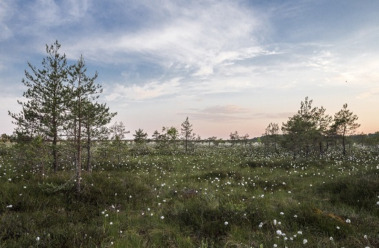
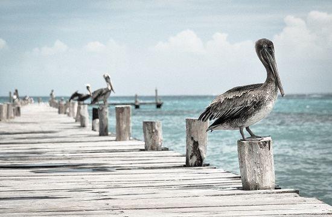
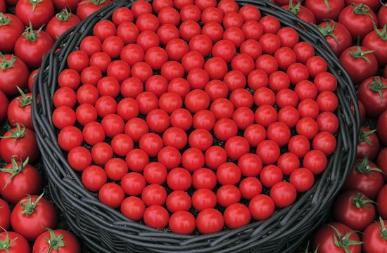
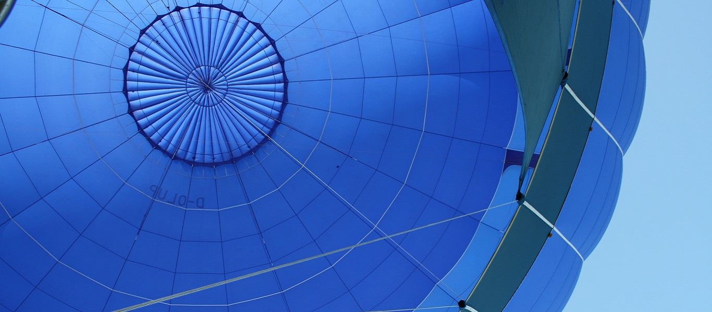

與自然共存
純天然原料
共同守護未來
NEWS
-

UNDE 100%純天然原料製作
100%純棉商品不含化學物質、不刺激皮膚、無副作用，不易引起皮膚過敏或產生刺癢感,特別是有氣喘或過敏體質的人,純棉是您最好的選擇
Read more → -

2019年12月最新活動訊息
活動名稱：2019年末換季商品大出清
活動日期：2019/12/1(日)-12/31(二)
活動內容：指定商品,買一送一
注意事項：特價商品出售,恕無法退換貨
Read more → -

UNDE電器產品延長保固活動
2019年1月後購買之UNDE電器產品,完成以下三步驟，即可延長保固二年
【步驟一】至FB官方粉絲團按「讚」章
【步驟二】至UNDE官網線上註冊,登入產品序號
Read more →
ABOUT US

UNDE創立於1980年,以提倡環保及回饋社會為核心理念,三十多年來為使用者及地球帶來最無負擔的產品。您所購買的UNDE產品消費金額中的2% UNDE會為您捐贈至社福團體,並於每年公布活動動態及捐贈明細,讓每位使用者都可以清楚了解UNDE的展望與進步,感謝各位消費者加入我們的行列。
( UNDE made in R.O.C. since 1980. )
UNDE
(Using Nature & Doing Eco)
Phone +886-2-1234-5678
Adress No. 7, Sec. 5, Xinyi Rd., Xinyi Dist., Taipei City 110, Taiwan (R.O.C.)
Business hour Mon-Fri 9:00am-6:00pm
E-mail abcde_1234@gmail.com